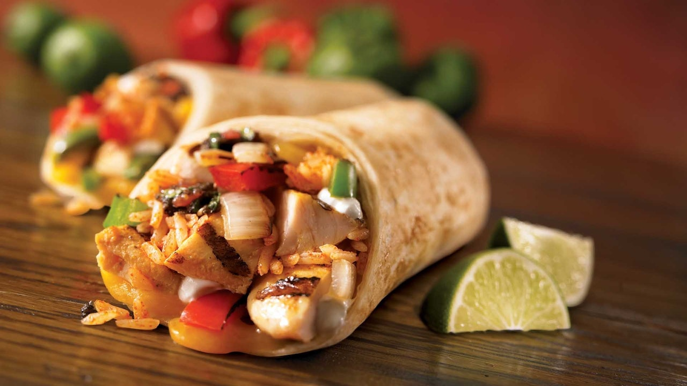

Burrito

Description
A burrito is a popular Mexican dish known for its delicious combination of flavors and fillings. To prepare a mouthwatering burrito, you will need tortillas, cooked rice, beans, grilled chicken or beef, onions, bell peppers, salsa, guacamole, sour cream, shredded cheese, and fresh cilantro.
Ingredients
- 4 large flour tortillas
- 1 cup cooked rice
- 1 cup canned beans (black or pinto), drained and rinsed
- 1 pound (450g) grilled chicken or beef, sliced
- 1 medium onion, diced
- 1 bell pepper, thinly sliced
- 1/2 cup salsa
- 1/2 cup guacamole
- 1/2 cup sour cream
- 1 cup shredded cheese (cheddar or Monterey Jack)
- Fresh cilantro, for garnish
Steps
- Warm the tortillas on a stovetop or in the microwave until soft and pliable.
- Spread a spoonful of cooked rice onto each tortilla, leaving a border around the edges.
- Layer the beans, grilled chicken or beef, diced onions, and bell peppers onto the tortillas.
- Add a dollop of salsa, guacamole, and sour cream on top of the fillings.
- Sprinkle shredded cheese over the fillings.
- Roll the tortillas tightly, tucking in the sides as you go, to form burritos.
- Place the burritos on a heated pan or griddle and cook for a few minutes on each side until golden and crispy.
- Remove from heat and let them cool slightly before serving.
- Garnish with fresh cilantro and serve the burritos hot.